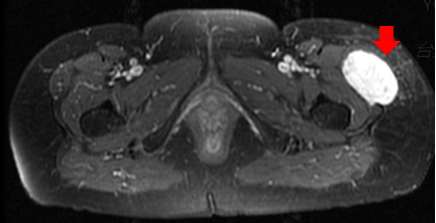

?哨?蹓???迎??????Myxoid Liposarcoma

?桃捂謘?蹓??蹇?▼??????寞???? (SDM) ?嚗?
?蝞賃??謕?????謜蹓??蹓鳴????????/p>
64 ????/span> ?剜憌???????/span>
??餈??/strong> ??銋?頛??∟??皜??荔????扔?銋??9?7?6 cm?甇謢塗祗?閰典?????賹??剜??/p>
????潘撓貔??/strong> ??扔?謓??喇?蹓潭??????餉?擗? (fixed)??????荒???/p>
?豲??潘撓貔??/strong> ?鞈? (Ca, P, ALP, LDH ?? ????輯??芣閰鄞蹐㎞I ?輯??抒????????荔???/p>
Margin: Free (4mm) FNCLCC grade 1
????????/strong> ??扔??????蹓??航????蹓橘??????蹇?桃?蹌?Myxoid Liposarcoma??/p>
????摮萄??/strong> ?????摮萄??t(12;16)(q13;p11) ??剁?????(FUS-DDIT3)??/p>
?????/strong> ????遴????寞撞?????????曄???????????????????/strong>??謍?擗釭擐??/p>
???????????/span>
????憛? ?????綜??????擗謒??6?3?3 cm ??扔???螂???蹇???徉?歹?蹌剝?亙???/p>
?????喳???/strong> ???MLPS ??踝???踐冪?叟▼??０???????望?改摰??脩????蹇??荔????/p>
??單??? ?撖?????????(Neoadjuvant Chemotherapy)???鞈?????????蛔??/p>

????????伍扔?⊥??蝞??謘?????????? Myxoid Liposarcoma (MLPS) ??玲???叟???堆??蟡??蝞賃?????株悻蟡?蹇????????綜垮蟡?蹇??朱瞍??????????蹇??????憐??恬 (??Chowdhry ??? 2018) ?皝??蝬????輯撒??謘???軋??蹇???剛???MLPS ??扔????????????????????84.7% ???豯??陷???/p>
????????蹇??撖抆冪 AIM (Adriamycin [Doxorubicin ????? Ifosfamide ????斤??? Mesna) ??MAID (Mesna, Adriamycin, Ifosfamide, Dacarbazine ????葛?)?蹇謕??鈭佗????皜??寞??賹??????? DNA ?荒?????輯摩???斗?豯??哨???/p>
1. Doxorubicin (Adriamycin, ???? [?鈭??鈭佗?謘?]
2. Ifosfamide (????斤??? [?鈭??鈭佗?謘?]
3. Mesna (?ｆ?謘?? [?鈭??鈭佗?謘?]
4. Dacarbazine (DTIC, ????葛?) [?鈭??鈭佗?謘?]
?蝞賃?????謘???????蟡??????氐?寞撞?蹓餅??堆???叟??謓????正?????瞏汕????甄?????????荒??????▽??ｇ???/p>
?嚗????????????DM ????謍堆?次????踹璆??純?/p>
????鞈??殉朱謓?/strong>
??魂???????遴????寞撞??甇?魂??叟??謆??????????????鈭??蛔??謘????堊垮?擗釭擐梢??滇?蹇?/p>
?方??????荔???/strong>
????謘??鞈??遴?????????釭????伍???對?蹓???抽????荒筆???隤?????????賹??蹓暸???頦??箸?謒芣?賃玥????撕??/p>
?嚗箏眺??桃??摮肅瞏?
?哨????桃?????∵???(????蛛????蹓??詨謇???謅撞?蹇?????謍?????????荒??望謍捍?/p>
???????蹇??剜???????/strong> ????????止赤?賹???? (??2/???)???豲??????倦??謘蝓???????壇蹇?????巨?嚗??謜??????隤?賹香??/p>
???????????恬??桃捂謘??/strong> ?嚗??????腹??嚗蜃???謜??????????正甇駁?銵??????嗅???株悻???(??MRI)?蹇?剁???????菜??? ????謅??(Red Flag Signs)??/strong> ??堆??/p>
?隞選???伍秤??甇餉????箄?????????歹?蹌???????堊扔?謆?隞螞????????(Unplanned excision / "Whoops" procedure)???????扔?皜???????伐??????皜訾??哨????爸????啾??? (Wide re-excision) ?謍喉??橫??蹇秧?ｇ???悻??荒?????????????MRI ?堊???????岑?/p>
???????剔????? ???????蝞赤??賡???剔???賹???仿??方???????????蛔????????桃捂謘????刻?蹇?方葩??箏?????斯????蛔???悻??貔螞???頦??撖????????砍?憸????賤???/p>
????哨?蟡??/strong> MLPS ????????氐?寞撞 + R0 ??叟???????堊契?????????氐蹇? MLPS ??伐??撖???踐冪?叟▼??０????閉??/p>
?改摰?摮萄??祈?拇???(Staging Work-up)??/strong> ??蟡??荔????伍扔?漸蹌剝?亙??蝞?????CT ??啾??? MLPS ?摮蛛??啣???改摰??脩?膠?蹓??撖??蹓橘??????蹓?嚚? (??謓梁???????橘????蟡?謅????蹇?????謜???????MLPS ??堊????拇??????血???荒? ??餅??止撮??蹎 (Whole Body MRI) ?謘踐????/????MRI???鞈???赤??蜃謕??????冪?叟▼??０??/p>
???謍??隡? ?止?蟡???撞???????澗?豲??????赯?謍船?蹇??????????謍堆??????????蟡???????⊥謍授?撢蹇??方號?仿頦??蹇?????踐?? 100% ????改摰?蹇??綽?????改???????????孕?蹇???(????蹇????)??/p>
????垓瘣菟???銋?頛荔????蛔??????(Margin free)??br>??祗?秋撒謓剝蝎??殉????魂??镼????????謘????br>?謕????strong>?叟???????摨??伍??????堊契???菔?頩??????ｇ蹓??軋?????恃??